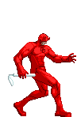

Mais tarde, Matt manteve sua identidade
como super-herói e tornou-se um combatente do crime em Nova York. Durante o dia, ele é o
advogado cego Matt Murdock e à noite enverga seu uniforme – agora todo vermelho –
para enfrentar perigosos inimigos como Demolidor, o Homem Sem Medo. Atualmente, o
herói mudou-se para a cidade de São Francisco e revelou sua identidade publicamente.
